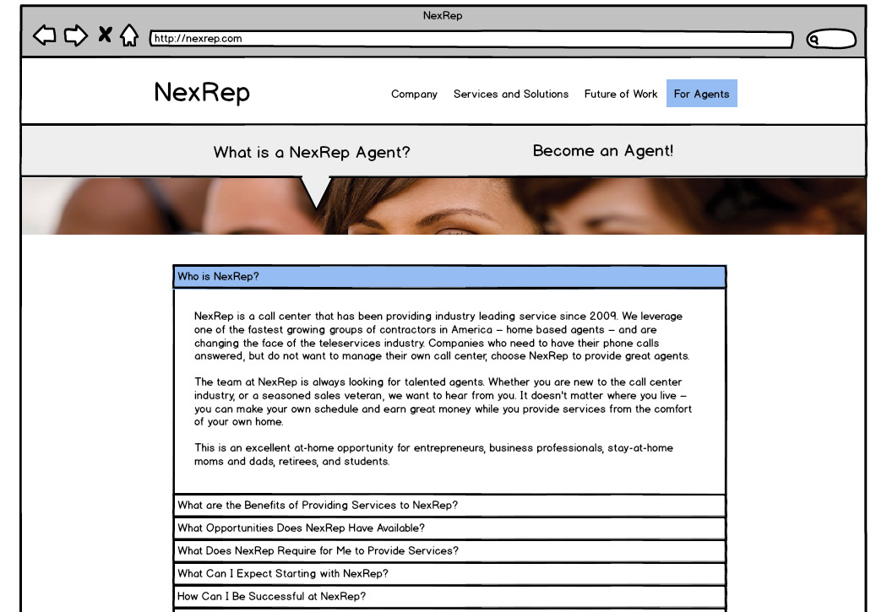
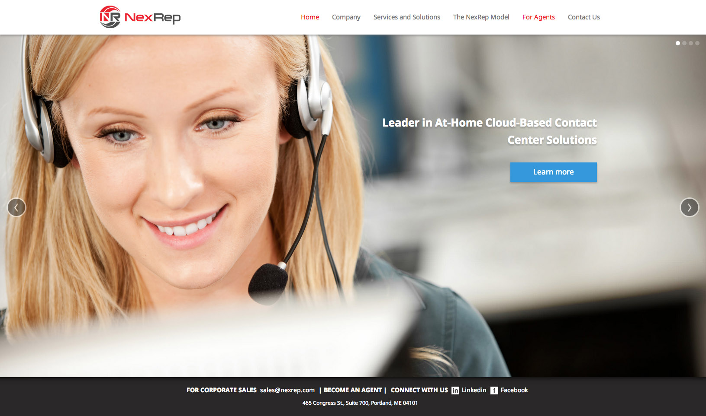
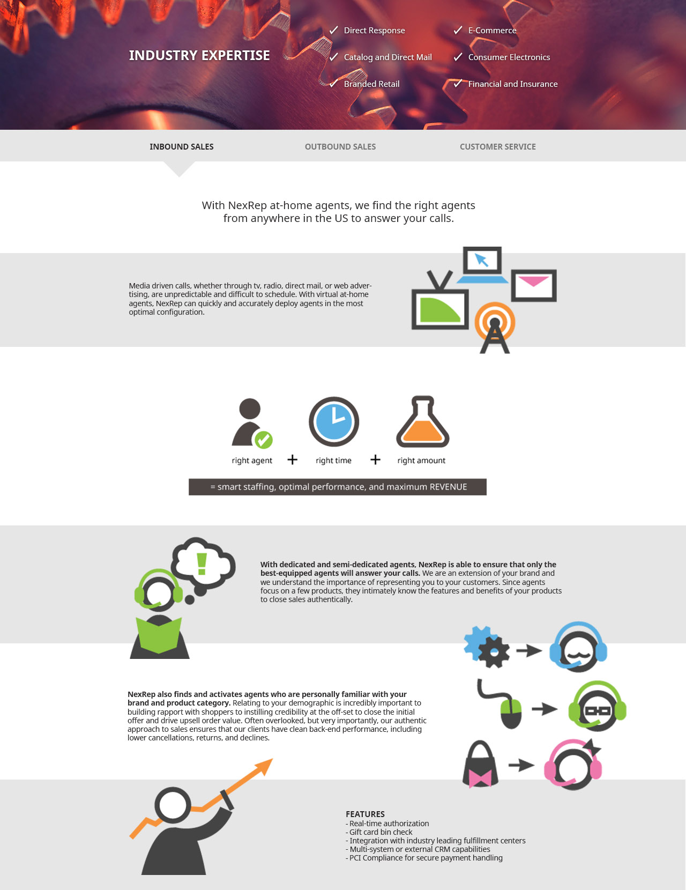
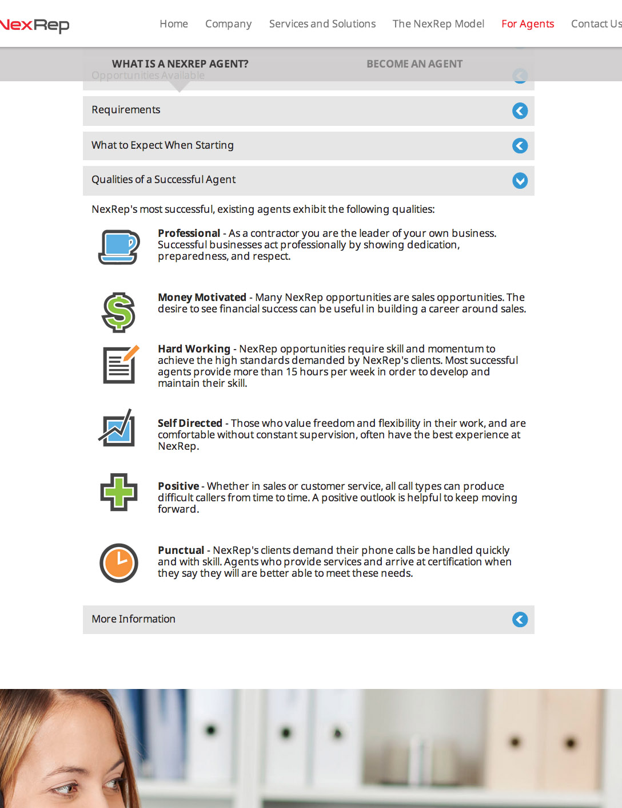
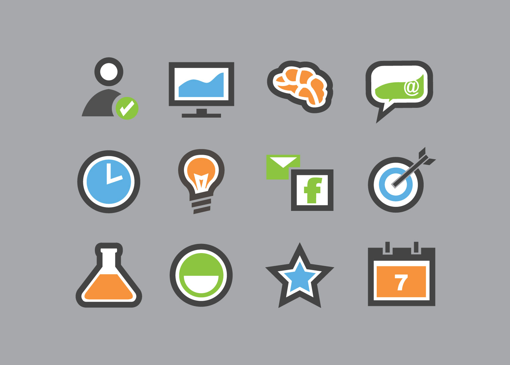
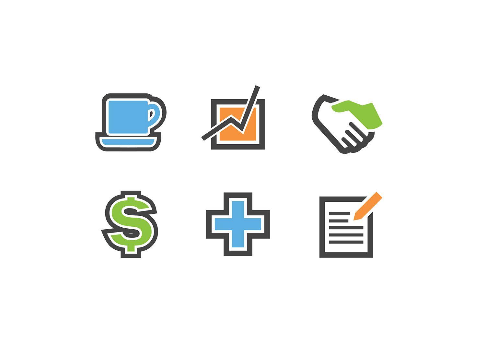

WEB AND UIUX
WEB AND UIUX

 WEB AND UIUX
WEB AND UIUX

NexRep is a nontraditional call center based in Maine. The client wanted to completely scrap their old site, completely changing the design as well as content/structure. The site was designed and built over several weeks.
My role in the project was mostly concerned with the user flow, low and high fidelity designs, creation of custom graphics and icons, and stock image selection. A developer friend of mine built the site following the high-fidelity designs and markups I created using Photoshop.
Tools: Adobe Illustrator, Photoshop, Balsamiq
Lo-fi wires used to communicate with the client early in the project.
    Custom vector graphics created for NexRep using Illustrator.